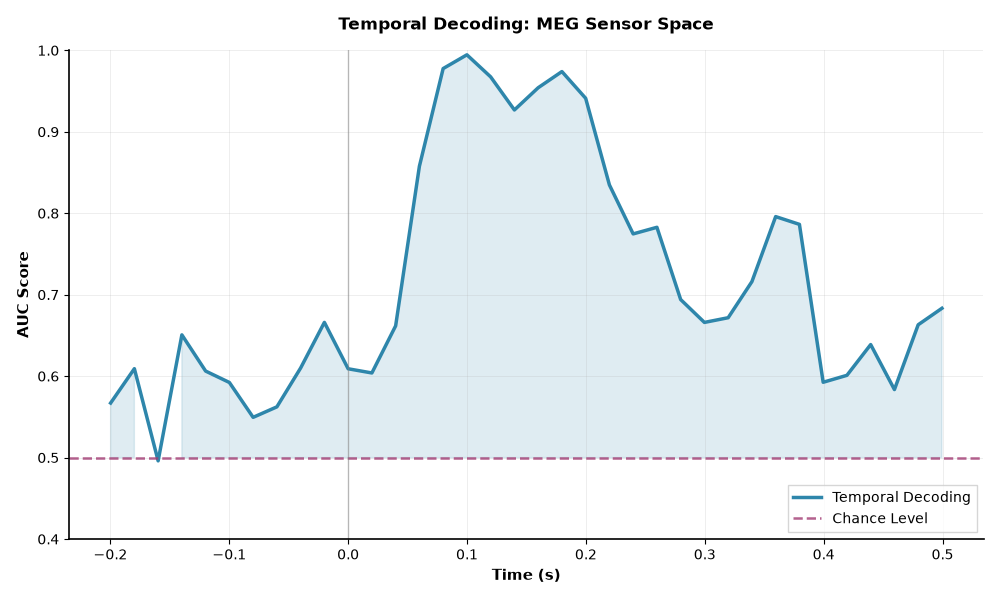
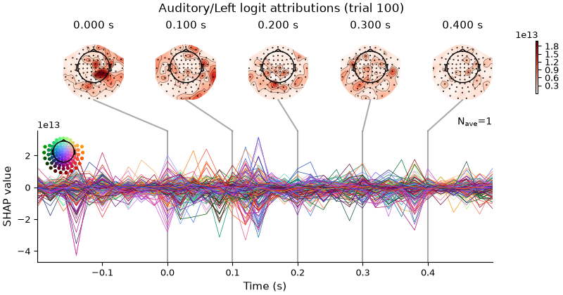
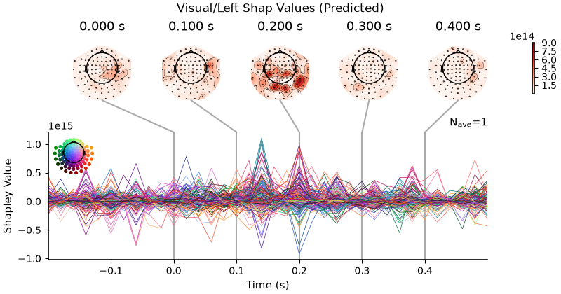
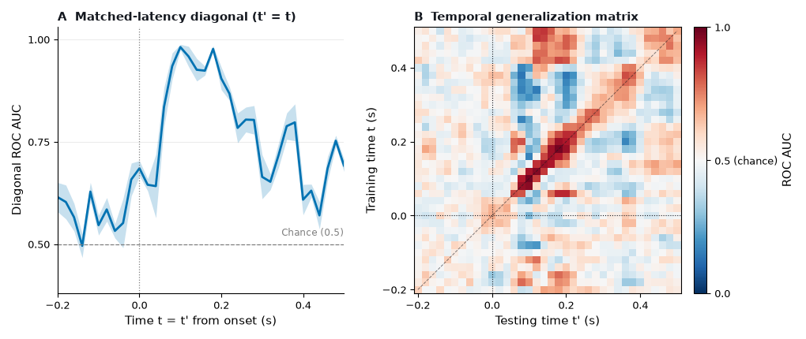

Note
Go to the end to download the full example code.
Temporal generalization with Braindecode#
Decoding an entire trial with a single spatio-temporal classifier tells whether
stimulus information is present in a recording, leaving open when that
information emerges and how the underlying neural code evolves across
processing stages. Following King and Dehaene [3] and MNE-Python’s decoding
framework [1], we separate these two questions by fitting one
EEGClassifier per time sample \(t\) on epoched data
\(X \in \mathbb{R}^{n_{\text{epochs}} \times n_{\text{channels}} \times n_{\text{times}}}\):
Time-by-time decoding (
SlidingEstimator): train and test each decoder \(f_t\) at the same latency \(t\) to track when experimental conditions become distinguishable in sensor space.Sensor attribution across time (SHAP [4]): estimate how strongly each sensor drives a non-linear decoder’s predictions at each latency.
Temporal generalization (
GeneralizingEstimator): train \(f_t\) at sample \(t\) and score it at every test sample \(t'\) to form the temporal generalization matrix \(M_{t, t'}\) [2], [3]. Its geometry separates a chain of transient neural generators (a narrow diagonal ridge along \(t' = t\)) from a sustained neural code (a square off-diagonal block) and from polarity reversals of evoked fields (below-chance off-diagonal lobes).
This example adapts MNE-Python’s decoding tutorial
[1] to use a PyTorch neural network wrapped in EEGClassifier.
Loading and preprocessing MEG epochs#
To isolate evoked sensor-space responses while keeping a short time grid for
repeated cross-validation, we load MNE’s sample MEG recording, keep the
203 planar gradiometers (excluding MEG 2443), band-pass filter between
2 and 20 Hz, epoch from -0.2 to 0.5 s around left-hemifield auditory
and visual stimuli, and decimate by a factor of 3 (to ~50 Hz, giving 36
samples per trial).
Planar gradiometers in SI units (T/m) have variance near 1e-23, which
is orders of magnitude smaller than BatchNorm1d’s eps=1e-5 floor and
would collapse normalized activations toward zero. Extracting epochs in
display units (fT/cm) via epochs.get_data(units="fT/cm") brings
sensor variance onto an order-unity numerical scale.
import matplotlib.pyplot as plt
import mne
import numpy as np
import shap
import torch
from mne.datasets import sample
from mne.decoding import (
GeneralizingEstimator,
SlidingEstimator,
cross_val_multiscore,
)
from sklearn.preprocessing import LabelEncoder
from skorch.callbacks import LRScheduler
from torch import nn
from torch.optim import AdamW
from braindecode import EEGClassifier
from braindecode.util import set_random_seeds
BLUE, GREY, INK = "#0072B2", "#7F7F7F", "#14181F"
plt.rcParams.update(
{
"figure.facecolor": "white",
"axes.facecolor": "white",
"font.family": "sans-serif",
"font.size": 10,
"axes.labelsize": 10.5,
"axes.titlesize": 10.5,
"xtick.labelsize": 9.5,
"ytick.labelsize": 9.5,
"axes.linewidth": 0.8,
"axes.spines.top": False,
"axes.spines.right": False,
"xtick.direction": "out",
"ytick.direction": "out",
}
)
cuda = torch.cuda.is_available()
device = "cuda" if cuda else "cpu"
set_random_seeds(seed=20240205, cuda=cuda)
data_path = sample.data_path()
raw_fname = data_path / "MEG" / "sample" / "sample_audvis_filt-0-40_raw.fif"
tmin, tmax = -0.200, 0.500
event_id = {"Auditory/Left": 1, "Visual/Left": 3}
raw = mne.io.read_raw_fif(raw_fname, preload=False)
raw.pick(picks=["grad", "stim", "eog"])
events = mne.find_events(raw, "STI 014")
raw.load_data().filter(2, 20, picks="grad")
raw.info["bads"] += ["MEG 2443"]
epochs = mne.Epochs(
raw,
events,
event_id,
tmin,
tmax,
proj=True,
picks=("grad", "eog"),
baseline=(None, 0.0),
preload=True,
reject={"grad": 4000e-13, "eog": 150e-6},
decim=3,
verbose="error",
)
epochs.pick(picks="meg", exclude="bads")
del raw
X = epochs.get_data(units="fT/cm")
y = epochs.events[:, 2]
y_encod = LabelEncoder().fit_transform(y)
n_classes = len(np.unique(y_encod))
classes = list(range(n_classes))
n_chans, n_times = X.shape[1], X.shape[2]
print(
f"Epochs: {X.shape[0]} trials x {n_chans} planar gradiometers x {n_times} samples"
)
Epochs: 123 trials x 203 planar gradiometers x 36 samples
Defining a per-timepoint neural decoder#
At a single sample \(t\), SlidingEstimator and
GeneralizingEstimator slice \(X[:, :, t]\) into a
2D matrix of shape (n_epochs, n_chans) and hand it to a scikit-learn
estimator. Where MNE’s linear pipeline stacks StandardScaler and
LogisticRegression, we pair a parameter-free nn.BatchNorm1d
(affine=False) with a three-layer GELU multi-layer perceptron wrapped
in EEGClassifier.
During training, BatchNorm1d standardizes each gradiometer across the
mini-batch and updates running mean and variance estimates used at evaluation
time. Because cross-validation is already managed externally by
cross_val_multiscore(), we set train_split=None so
skorch trains on the entire training fold without carving out a nested 20 %
validation split or running per-epoch validation scoring on every time point.
class BasicMLP(nn.Module):
"""Three-layer sensor-space MLP preceded by channel-wise BatchNorm1d."""
def __init__(self, n_chans, n_outputs, n_times=1):
super().__init__()
self.n_chans = n_chans
self.n_classes = n_outputs
self.n_times = n_times
self.norm = nn.BatchNorm1d(self.n_chans, affine=False, eps=1e-5)
self.model = nn.Sequential(
nn.Linear(self.n_chans, self.n_chans),
nn.GELU(),
nn.Linear(self.n_chans, self.n_chans),
nn.GELU(),
nn.Linear(self.n_chans, self.n_classes),
)
def forward(self, x):
return self.model(self.norm(x))
def make_timepoint_classifier(epochs_n=25, batch_size=32):
return EEGClassifier(
BasicMLP,
module__n_chans=n_chans,
module__n_outputs=n_classes,
module__n_times=1,
criterion=nn.CrossEntropyLoss,
optimizer=AdamW,
optimizer__lr=0.01,
optimizer__foreach=False,
batch_size=batch_size,
max_epochs=epochs_n,
train_split=None,
callbacks=[
("lr_scheduler", LRScheduler("CosineAnnealingLR", T_max=epochs_n - 1)),
],
device=device,
classes=classes,
verbose=False,
)
Time-by-time decoding#
To determine when auditory and visual stimuli become separable in sensor
space, SlidingEstimator fits one independent
EEGClassifier at each of the 36 time samples under 5-fold stratified
cross-validation (n_jobs=1 avoids pickling PyTorch modules across processes)
and scores predictions with ROC AUC.
time_decoding_mlp = SlidingEstimator(
make_timepoint_classifier(), n_jobs=1, scoring="roc_auc", verbose=False
)
cv_scores = cross_val_multiscore(time_decoding_mlp, X, y_encod, cv=5, n_jobs=1)
scores_mean = cv_scores.mean(axis=0)
scores_sem = cv_scores.std(axis=0) / np.sqrt(len(cv_scores))
fig, ax = plt.subplots(figsize=(6.8, 3.6))
for fold_idx, fold_score in enumerate(cv_scores):
ax.plot(
epochs.times,
fold_score,
color=BLUE,
alpha=0.18,
linewidth=0.8,
label="Individual CV folds" if fold_idx == 0 else None,
)
ax.fill_between(
epochs.times,
scores_mean - scores_sem,
scores_mean + scores_sem,
color=BLUE,
alpha=0.22,
linewidth=0,
)
ax.plot(epochs.times, scores_mean, color=BLUE, linewidth=2.0)
ax.axhline(0.5, color=GREY, linestyle="--", linewidth=0.9)
ax.axvline(0.0, color=GREY, linestyle=":", linewidth=0.9)
ax.text(
epochs.times[-1],
0.515,
"Chance (0.5)",
color=GREY,
fontsize=8.5,
ha="right",
va="bottom",
)
ax.text(
0.008,
0.42,
"Stimulus onset",
color=GREY,
fontsize=8.5,
ha="left",
va="bottom",
)
ax.annotate(
"Mean ROC AUC (± SEM)",
xy=(epochs.times[scores_mean.argmax()], scores_mean.max()),
xytext=(0.23, 0.94),
color=BLUE,
fontsize=9,
fontweight="bold",
arrowprops={"arrowstyle": "-", "color": BLUE, "lw": 0.8},
)
ax.grid(axis="y", color="#EAEAEA", linewidth=0.7)
ax.set_axisbelow(True)
ax.set_xlim(epochs.times[0], epochs.times[-1])
ax.set_ylim(0.38, 1.03)
ax.set_xticks([-0.2, 0.0, 0.2, 0.4])
ax.set_yticks([0.5, 0.75, 1.0])
ax.set_xlabel("Time from stimulus onset (s)")
ax.set_ylabel("Decoding ROC AUC")
ax.set_title(
"A Sensor-space auditory vs. visual decoding across time",
loc="left",
fontweight="bold",
color=INK,
)
fig.tight_layout()

Before stimulus onset (t < 0 s), cross-validated AUC hovers around the
0.5 chance baseline. Decoding rises sharply between 0.06 and
0.10 s as primary auditory and visual cortices generate distinct magnetic
field topographies, peaks near 1.0 around 0.12–0.18 s, and decays
gradually while remaining above chance through 0.50 s.
Sensor attributions across latencies with SHAP#
For a linear classifier, weights can be transformed into interpretable spatial
activation patterns from the data covariance [1]. Because BasicMLP
composes non-linear GELU layers, no single linear spatial filter exists.
To inspect which planar gradiometers drive the network at each sample, we fit
SlidingEstimator on all 123 epochs and compute DeepLIFT Shapley
attributions (shap.DeepExplainer [4]) on a held-out visual-left trial
(trial index 100) relative to a 100-trial background reference.
Positive Shapley values push the class logit upward relative to the background expectation, whereas negative values push it downward.
time_decoding_mlp.fit(X, y_encod)
background = torch.from_numpy(X[:100]).to(device=device, dtype=torch.float32)
test_trial = torch.from_numpy(X[100:101]).to(device=device, dtype=torch.float32)
aud_shap = []
vis_shap = []
for t_idx, est in enumerate(time_decoding_mlp.estimators_):
# Apply the frozen BatchNorm1d statistics before explaining the MLP layers.
norm_layer = est.module_.eval().norm
with torch.inference_mode():
bg_norm = norm_layer(background[:, :, t_idx])
trial_norm = norm_layer(test_trial[:, :, t_idx])
explainer = shap.DeepExplainer(est.module_.model, bg_norm)
shap_values = explainer.shap_values(trial_norm)
aud_shap.append(shap_values[0, :, 0])
vis_shap.append(shap_values[0, :, 1])
aud_shap = np.asarray(aud_shap)
vis_shap = np.asarray(vis_shap)
def plot_shap_evoked(shap_matrix, heading):
evoked_shap = mne.EvokedArray(
shap_matrix.T, epochs.info, tmin=epochs.times[0], comment=heading
)
evoked_shap.plot_joint(
times=np.arange(0.0, 0.500, 0.100),
title=heading,
ts_args={"time_unit": "s", "units": {"grad": "SHAP value"}},
topomap_args={"time_unit": "s"},
)
Attributions for the unpredicted Auditory/Left output are negative over
posterior occipital sensors around 0.1–0.2 s, whereas attributions for the
predicted Visual/Left output show matching positive occipital peaks over
right-lateralized visual gradiometers contralateral to the left visual field.
plot_shap_evoked(aud_shap, "Auditory/Left logit attributions (trial 100)")

And for the predicted Visual/Left class on the same trial:
plot_shap_evoked(vis_shap, "Visual/Left logit attributions (trial 100)")

Temporal generalization across latencies#
Sustained above-chance decoding from 0.07 to 0.50 s is compatible
with two different dynamical regimes [3]: a single cortical pattern
maintained throughout the epoch, or a chain of transient stages handing
information from one sensor configuration to the next.
To separate these regimes, GeneralizingEstimator fits
one EEGClassifier at each training time \(t\) and evaluates its ROC
AUC at every testing time \(t'\) across 3-fold stratified
cross-validation, yielding the \(36 \times 36\) temporal generalization
matrix \(M_{t, t'}\).
generalizing_decoding_mlp = GeneralizingEstimator(
make_timepoint_classifier(), n_jobs=1, scoring="roc_auc", verbose=False
)
gen_cv_scores = cross_val_multiscore(
generalizing_decoding_mlp, X, y_encod, cv=3, n_jobs=1
)
gen_scores = gen_cv_scores.mean(axis=0)
diag_scores = np.diag(gen_scores)
diag_sem = np.diagonal(gen_cv_scores, axis1=1, axis2=2).std(axis=0) / np.sqrt(
len(gen_cv_scores)
)
# sphinx_gallery_thumbnail_number = -1
fig, (ax_diag, ax_tgm) = plt.subplots(
1, 2, figsize=(10.2, 4.3), gridspec_kw={"width_ratios": [1.05, 1.15]}
)
# Panel A: diagonal slice (train time == test time)
ax_diag.fill_between(
epochs.times,
diag_scores - diag_sem,
diag_scores + diag_sem,
color=BLUE,
alpha=0.22,
linewidth=0,
)
ax_diag.plot(epochs.times, diag_scores, color=BLUE, linewidth=2.0)
ax_diag.axhline(0.5, color=GREY, linestyle="--", linewidth=0.9)
ax_diag.axvline(0.0, color=GREY, linestyle=":", linewidth=0.9)
ax_diag.text(
epochs.times[-1],
0.515,
"Chance (0.5)",
color=GREY,
fontsize=8.5,
ha="right",
va="bottom",
)
ax_diag.grid(axis="y", color="#EAEAEA", linewidth=0.7)
ax_diag.set_axisbelow(True)
ax_diag.set_xlim(epochs.times[0], epochs.times[-1])
ax_diag.set_ylim(0.38, 1.03)
ax_diag.set_xticks([-0.2, 0.0, 0.2, 0.4])
ax_diag.set_yticks([0.5, 0.75, 1.0])
ax_diag.set_xlabel("Time t = t' from onset (s)")
ax_diag.set_ylabel("Diagonal ROC AUC")
ax_diag.set_title(
"A Matched-latency diagonal (t' = t)",
loc="left",
fontweight="bold",
color=INK,
)
# Panel B: square Temporal Generalization Matrix centered on chance (0.5 = white)
half_dt = 0.5 * (epochs.times[1] - epochs.times[0])
extent = [
epochs.times[0] - half_dt,
epochs.times[-1] + half_dt,
epochs.times[0] - half_dt,
epochs.times[-1] + half_dt,
]
im = ax_tgm.imshow(
gen_scores,
origin="lower",
cmap="RdBu_r",
extent=extent,
vmin=0.0,
vmax=1.0,
aspect="equal",
interpolation="nearest",
)
ax_tgm.axvline(0.0, color=INK, linewidth=0.8, linestyle=":")
ax_tgm.axhline(0.0, color=INK, linewidth=0.8, linestyle=":")
ax_tgm.plot(
[epochs.times[0], epochs.times[-1]],
[epochs.times[0], epochs.times[-1]],
color=INK,
linewidth=0.7,
linestyle="--",
alpha=0.55,
)
ax_tgm.spines["top"].set_visible(True)
ax_tgm.spines["right"].set_visible(True)
ax_tgm.set_xticks([-0.2, 0.0, 0.2, 0.4])
ax_tgm.set_yticks([-0.2, 0.0, 0.2, 0.4])
ax_tgm.set_xlabel("Testing time t' (s)")
ax_tgm.set_ylabel("Training time t (s)")
ax_tgm.set_title(
"B Temporal generalization matrix",
loc="left",
fontweight="bold",
color=INK,
)
cbar = fig.colorbar(im, ax=ax_tgm, fraction=0.046, pad=0.04)
cbar.set_ticks([0.0, 0.5, 1.0])
cbar.set_ticklabels(["0.0", "0.5 (chance)", "1.0"])
cbar.set_label("ROC AUC")
fig.tight_layout()

Reading the temporal generalization matrix#
Comparing the diagonal slice (A) with the full \((t, t')\) plane
(B, where white corresponds to the 0.5 chance baseline, red to
above-chance generalization, and blue to below-chance reversal) reveals three
dynamical features described by King and Dehaene [3]:
Early transient cascade (0.07–0.15 s): high AUC (deep red) stays tightly concentrated near the \(t' = t\) diagonal. A decoder trained on the initial sensory volley at
0.09 sloses accuracy within~40 ms, indicating rapid sequential propagation across distinct sensor patterns.Broader post-sensory maintenance (0.15–0.35 s): the red region widens into an off-diagonal block, showing that sensor topographies evolve more slowly and remain mutually generalizable across
~150–200 ms.Below-chance off-diagonal lobes (blue): decoders trained around
0.09–0.13 sscore systematically below0.5when tested around0.20–0.30 s(and symmetrically across the diagonal), consistent with polarity reversal of the evoked magnetic field between early and late deflections [2], [3].
References#
Total running time of the script: (0 minutes 52.584 seconds)
Run this example